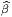
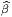
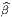
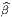
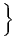
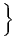

En toute logique, cette section ne devrait pas se trouver dans ce premier chapitre consacré aux variétés différentielles. En effet, la définition de la structure de variété riemannienne est liée à un cas particulier de restriction d’espace fibré (les espaces fibrés font l’objet du chapitre 4). Cela dit, pour des raisons à la fois historiques et pédagogiques, il est sans doute préférable que le lecteur se familiarise d’ores et déjà avec certaines propriétés des variétés riemanniennes.
En géométrie élémentaire, on étudie d’abord les propriétés linéaires et affines et on passe, ensuite, aux notions métriques. Il en va de même dans l’étude des variétés. Une variété différentiable est encore un objet flasque et mou. . . la donnée d’une métrique rigidifie l’espace considéré et permet, d’une part, de parler de norme des vecteurs tangents et, d’autre part, de parler de distances entre points. La définition élémentaire d’une métrique g, sur une variété différentiable M, est la suivante : c’est un champ de tenseurs covariants symétriques de degré deux (en général on impose également une condition de non dégénérescence). Si {xμ} désigne un système de coordonnées locales, on écrira
Une variété différentiable munie d’une métrique (non dégénérée) est, par définition, une variété riemannienne. Nous n’avons pas imposé au produit scalaire défini par (gμv) d’être positif et nous ne l’imposerons pas. En général, une forme bilinéaire symétrique est caractérisée par sa signature (p,q) – le nombre de signes +(p) et de signes -(q) obtenus lorsqu’on la diagonalise. Si on tient à préciser que la signature est de type (p, 0) ou (0,p), on dira que la variété est proprement riemannienne. Si on tient à préciser que la signature est de type (p, 1) ou (1,p), on dira que la variété est lorentzienne (on dit aussi, dans ce dernier cas, que la signature est hyperbolique). Les cas riemanniens et lorentziens sont particulièrement importants en physique mais nous n’avons pas besoin de nous restreindre à ce cadre pour l’essentiel de ce qui suit.
∙ Pour une variété riemannienne (M,g) orientée, on peut définir une forme de
volume canonique de la façon suivante. Soit {e } un repère mobile orthonormal,
c’est-à-dire g(e
} un repère mobile orthonormal,
c’est-à-dire g(e ,e) = η
,e) = η
 , avec η
, avec η
 = ±δ
= ±δ
 , le signe ± dépendant de la signature
de la métrique. Pour l’instant nons pouvons supposer que l’espace est proprement
riemannien, et orienté, mais à la fin de cette section, nous verrons comment
compléter les propriétés qui suivent lorsque la signature de la métrique est
quelconque, et plus particulièrement lorsqu’elle est hyperbolique. Désignant par
{e
, le signe ± dépendant de la signature
de la métrique. Pour l’instant nons pouvons supposer que l’espace est proprement
riemannien, et orienté, mais à la fin de cette section, nous verrons comment
compléter les propriétés qui suivent lorsque la signature de la métrique est
quelconque, et plus particulièrement lorsqu’elle est hyperbolique. Désignant par
{e } le co-repère dual du repère mobile choisi, l’élément de volume riemannien
est
} le co-repère dual du repère mobile choisi, l’élément de volume riemannien
est

Soit {σα} un autre repère, non nécessairement orthonormal, et Λα la
matrice de passage, c’est-à-dire σα = Λα
la
matrice de passage, c’est-à-dire σα = Λα e
e . Alors gαβ = Λα
. Alors gαβ = Λα Λ
βg
Λ
βg
 , ce qui
implique
, ce qui
implique

 )| = 1 puisqu’on a supposé la base {e
)| = 1 puisqu’on a supposé la base {e } orthonormale et
donc
} orthonormale et
donc
![det(Λ^α) = |det(g )|1∕2 = [det((Λ -1)α)]-1
α αβ ^α](source164x.png)

En particulier, si {σα} désigne un repère naturel  ∂ __
∂xμ, on a g = gμνdxμ ∧dxν
et
∂ __
∂xμ, on a g = gμνdxμ ∧dxν
et

∙ La métrique g permet également d’établir un isomorphisme canonique entre l’espace tangent TM et l’espace cotangent T*M. Cette propriété est évidente puisqu’en chaque point, l’existence d’un produit scalaire permet d’identifier les espaces vectoriels TP M avec TP *M. En d’autres termes, on peut “monter” et “descendre” les indices à l’aide de la métrique : au vecteur v = vμe μ on associe la 1-forme bv = v μeμ définie par v μ = gμνvν ( {eμ} désignant la base duale de {eμ}). Inversement, à la 1-forme σ = σμeμ on associe le vecteur ♯σ = σμe μ avec σμ = gμvσ ν. On peut écrire ⟨bv 1,v2⟩ = g(v1,v2) et ⟨σ, ,♯σ2⟩ = (σ1,σ2). Les isomorphismes ♭ et ♯ sont appelés isomorphismes musicaux (pour des raisons évidentes !).Cela dit, les physiciens choisissent en général une métrique une fois pour toutes et décident donc de passer sous silence ces isomorphismes musicaux. En d’autres termes, ils identifient v et ♭v ainsi que σ et ♯σ et écrivent tout simplement v = vμe μ = vμeμ ou σ = σ μeμ = σμe μ. Pour des raisons analogues ils écrivent g = gμveμ ⊗ eν = gμve μ ⊗ ev (mais il faut bien entendu se rappeler que (gμv) est la matrice inverse de (gμv). Les isomorphismes musicaux permettent, de la même façon, d’identifier les tenseurs covariants et contravariants de même rang . Attention, lorsqu’on n’utilise pas de métrique pour monter ou baisser les indices, il n’y a pas de raison de faire attention à la position relative des indices covariants et contravariants (par exemple, on peut parler de Tνρμ sans dire s’il s’agit de Tμ νρ, de Tνρμ ou de Tνμ ρ). Les trois types de composantes correspondent d’ailleurs à des objets différents puisque on travaille, suivant les cas, dans TM ⊗ T*M ⊗ T*M, T*M ⊗ T*M ⊗ TM ou T*M ⊗ TM ⊗ T*M. Par contre, si on utilise la métrique pour procéder à des identifications, il faut faire attention aux positions relatives des indices haut et bas ! Ainsi, par exemple, Tμνρ désignera gμμ′Tμ′ νρ. Tout ceci est assez trivial, mais peut être fallait-il le dire une fois ?
Lorsqu’on a choisi une métrique, on écrira donc abusivement (sans utiliser la notation ♭ et ♯), par exemple T = Tμvρeμ ⊗ev ⊗eρ = T μνρeμ ⊗e v ⊗eρ = Tμvρe μ ⊗ev ⊗eρ = …
Les isomorphismes musicaux sont quelquefois simplement désignés par le même symbole g que la métrique elle même, le nombre d’arguments permettant de décider si on parle des isomorphismes en question ou de la métrique. Par exemple, on peut noter g(eμ) = gμveν et g(eμ) = gμve ν. Ceci est en accord avec les notations précédentes puisque par exemple g(v) = g(vμe μ) = vμg(e μ) = vμg μveν = v veν.
Avec ces notations, nous avons alors g(v,w) = ⟨g(v),w⟩ = ⟨g(w),v⟩ = g(w,v).
∙ L’existence d’une métrique permet non seulement de calculer le produit scalaire de deux vecteurs (ou de deux 1-formes) mais de contracter n’importe quel tenseur d’ordre k covariant, contravariant ou partiellement covariant et contravariant avec n’importe quel autre tenseur d’ordre k. On utilisera encore la notation ⟨|⟩ pour écrire ces contractions de type assez général. Plutôt que de décrire les différents cas, il suffit de dire, en termes imagés, qu’on “monte” tous les indices du premier à l’aide de la métrique, qu’on “descend” tous les indices du second et qu’on contracte complètement les objets obtenus. Par exemple, si S = Sμνρeμ ⊗ eν ⊗ e ρ et T = Tμνρeμ ⊗ e ν ⊗ eρ on fabrique Sμvρ′ = gρ′ρSμvρ et Tμ′νρ = gμ′μT μνρ. On peut alors calculer ⟨S,T⟩ = SμνρT μνρ. En particulier, si {φ1,φ2,…,φk} désignent une famille de 1-formes et {ψ1,ψ2,…,ψk} en désigne une autre, on peut vérifier que cette définition conduit à


∙ Lorsque la signature de la métrique n’est pas proprement riemannienne, c’est à dire lorsqu’elle est de type (p,q), il faut supposer que la variété admet une orientation temporelle et qu’elle est temporellement orientée. Dans le cas usuel de l’espace-temps de la physique (signature (3, 1)), on utilisera des indices 0, 1, 2, 3, comme c’est l’usage, plutôt que 1, 2, 3, 4 ; on posera alors


 ) = (-1)q.
Les formules précédentes restent donc valables et on aura toujours, par
exemple,
) = (-1)q.
Les formules précédentes restent donc valables et on aura toujours, par
exemple,
 δα1α2…αn12…n, mais si
on “monte” ces indices (à l’aide de la métrique) le résultat va dépendre de la
signature, plus particulièrement du nombre q de signes “-” dans la métrique. On
obtient donc
δα1α2…αn12…n, mais si
on “monte” ces indices (à l’aide de la métrique) le résultat va dépendre de la
signature, plus particulièrement du nombre q de signes “-” dans la métrique. On
obtient donc


∙ Pour terminer, notons que l’existence d’une métrique permet d’associer à la différentielle df d’une fonction f, un champ de vecteurs, le gradient de f défini par gradf = ♯df. Ainsi, dans un repère naturel, on écrira

Encore une fois, la présente section consacrée aux variétés riemanniennes n’est destinée qu’à introduire certaines notations utiles et quelques notions élémentaires. Nous reviendrons plus en détail sur les variétés riemanniennes à la fin du chapitre consacré aux connexions.